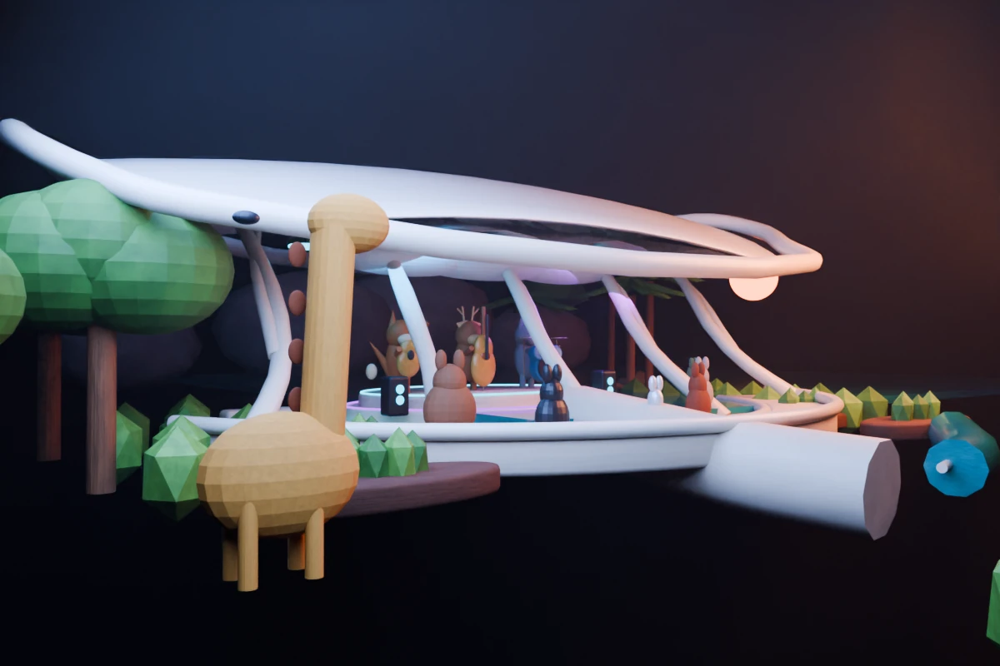
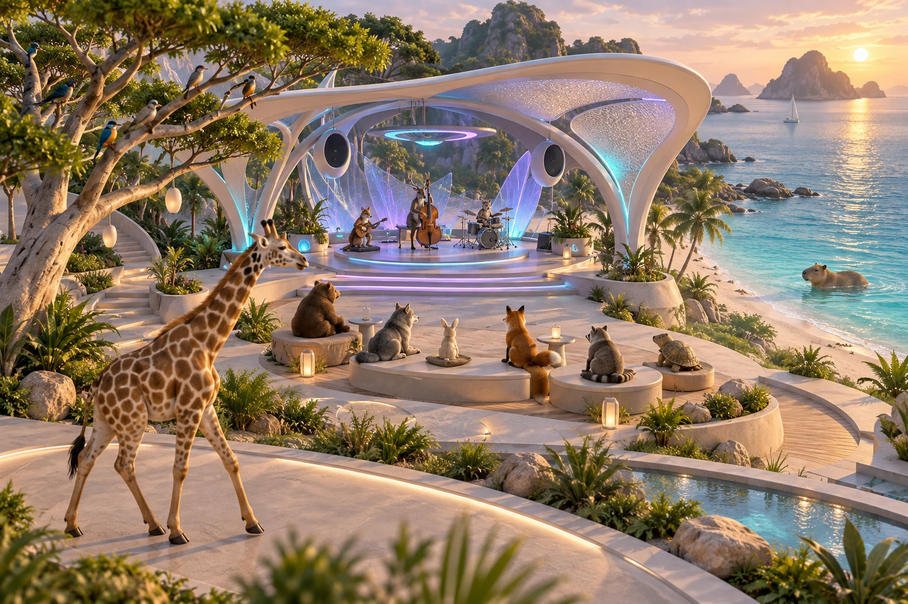
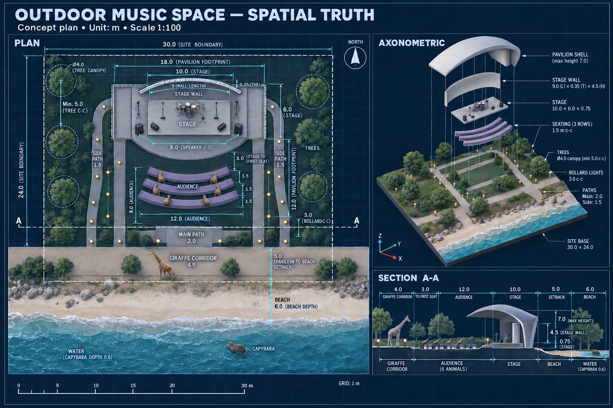
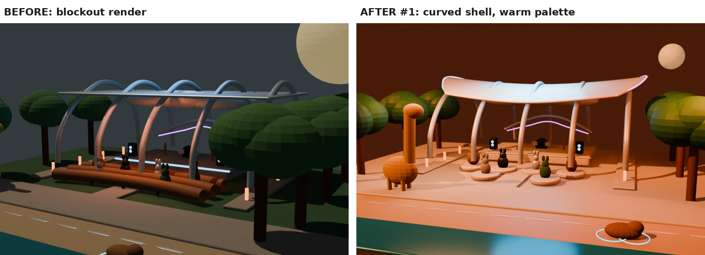
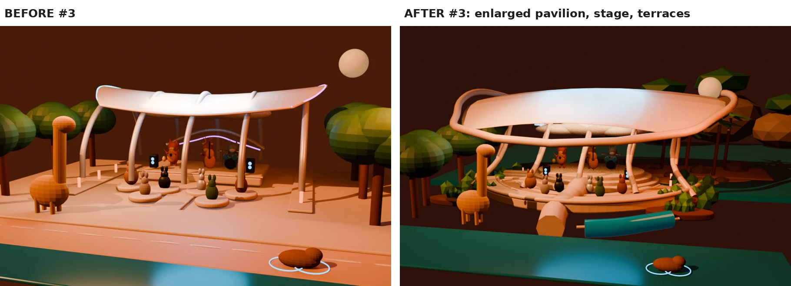
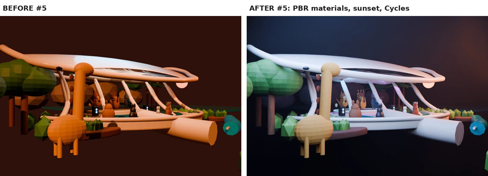

Future Seaside
Outdoor Music Space.

A speculative coastal music venue where an organic pavilion, animal musicians, and a playful audience share a landscape. Built through iterative AI-assisted work in Blender, the scene explores how scale, composition, and light shape the experience of a place.
A moving point of view.
Orbiting views and close approaches reveal the canopy, stage, and audience.
Download video · 4.41 MB ↓Form, atmosphere,
and a sense of scale.
The giraffe anchors the foreground; the shell canopy gathers the stage and listeners beneath it. A materials-and-lighting study explores warmer atmosphere.

A reference.
A spatial proposition.
The concept image set a target for a flowing pavilion, coastal planting, and warm directional light. The plan translated that atmosphere into stage, seating, and circulation relationships.


Small instructions.
Visible changes.
Focused revisions addressed one problem at a time: the camera, pavilion scale, then materials and lighting. Each comparison preserves the earlier state as a way to judge the next decision.



A complete object list does not guarantee a convincing place. Camera height, spatial hierarchy, and light made the largest difference. Further work would refine the planting, canopy thickness, and visibility of the musicians.
Another kind
of landscape.
Mind the Traffic / Album cover